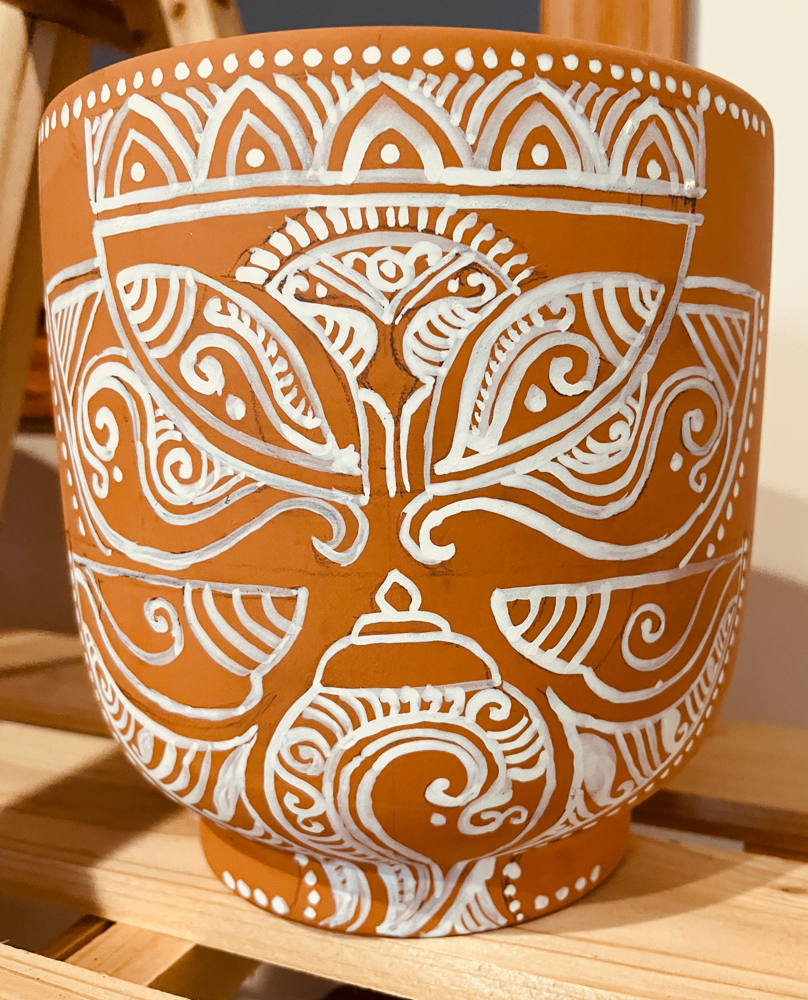

The design painted on the terracotta pot was conceptualized by Mr. Sudhi Ranjan Mukherjee, Shantiniketan, India.
Haimonti is trained as a computer scientist, but loves to read, paint, and write in her spare time.